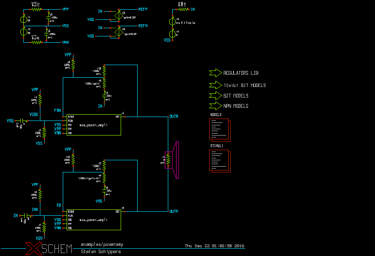

NETLISTING
XSCHEM has 3 predefined netlisting modes, Spice, Verilog and VHDL. Netlisting mode can be set in the Options menu (Vhdl, Verilog Spice radio buttons) or with the <Shift>V key. Once a netlist mode is set, hitting the Netlist button on the top-right of the menu bar or the <Shift>N key will produce the netlist file in the defined simulation directory. The simulation directory is one important path that is specified in the xschemrc file, if no one is defined XSCHEM will prompt for a directory. The path where netlists are produced can be changed with the Simulation->Set netlist dir menu entry. The netlist filename is cellname.ext where cellname is the name of the top-level schematic from which the netlist has been generated, and ext is the file extension:
- spice for spice netlist.
- vhdl for vhdl netlist.
- v for verilog netlist.
EXAMPLE
Consider the following top level schematic, part of the XSCHEM distribution (examples/poweramp.sch).
This schematic is made of some leaf components and some subcircuit components:
- leaf: these componens are 'known' to the simulator,
netlist of these blocks is done by specifying a 'format' attribute in the symbol
property string. Examples of leaf components in the schematic above are voltage sources,
resistors, capacitors, dependent sources. The following are examples of leaf component
instantiations in a SPICE netlist:
c3 VSS VNN 100u m=1 r11 VPP net1 0.3 m=1 r9 VNN net2 0.3 m=1 r19 OUTM FBN '100k' m=1
The format of resistor (and capacitor) SPICE netlist is defined in the format attribute of the symbol global property:
format="@name @pinlist @value m=@m"
- subcircuit: these components are not base blocks known to the simulator, but
are representation of a more complex block. These components have in addition to the symbol
a schematic representation. In the picture example the mos_power_ampli is a
subcircuit block. These type of components also have a 'format' property that defines
a subcircuit call. A subcircuit call specifies the connections of nets to the symbol pins
and the symbol name. The following two subcircuit calls are present in the SPICE
netlist:
x1 OUTM VSSX FBN VPP VNN VSS mos_power_ampli x0 OUTP INX FB VPP VNN VSS mos_power_ampli
The format of subcircuit type components is also defined in the symbol format attribute:
format="@name @pinlist @symname"
For subcircuits, after completing the netlist of the top level the XSCHEM' netlister will recursively generate all the netlists of subcircuit components until leaf schematics are reached that do not instantiate further subcircuits.
... ... (end of top level netlist) ... * expanding symbol: examples/mos_power_ampli # of pins=6 .subckt mos_power_ampli OUT PLUS MINUS VPP VNN VSS *.ipin PLUS *.ipin MINUS *.ipin VPP ... ...
Other netlist formats
All the concepts explained for SPICE netlist apply for Verilog and VHDL formats.
Its up to the designer to ensure that the objects in the schematic are 'known' to the
target simulator. For example a resistor is normally
not used in VHDL or Verilog designs, so unless an appropriate 'format'
attribute is defined (for example a rtran device may be good for a verilog
resistor with some limitations).
The format attribute for Verilog is called verilog_format and
the attribute for VHDL is vhdl_format
The following example shows two attributes in a NMOS symbol that define the format
for SPICE and for Verilog and some valid default (template) values:
type=nmos format="@name @pinlist @model w=@w l=@l m=@m" verilog_format="@verilog_gate #(@del ) @name ( @@d , @@s , @@g );" template="name=x1 verilog_gate=nmos del=50,50,50 model=NCH w=0.68 l=0.07 m=1" generic_type="model=string"